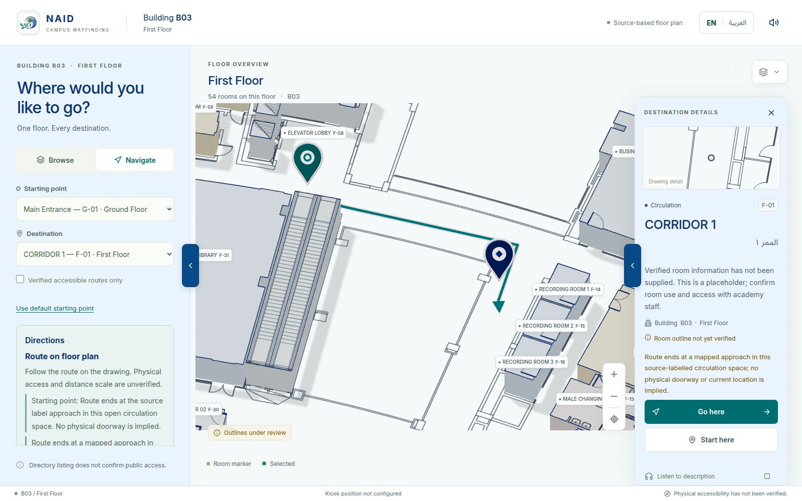
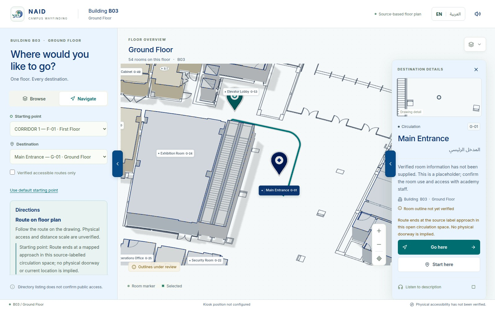
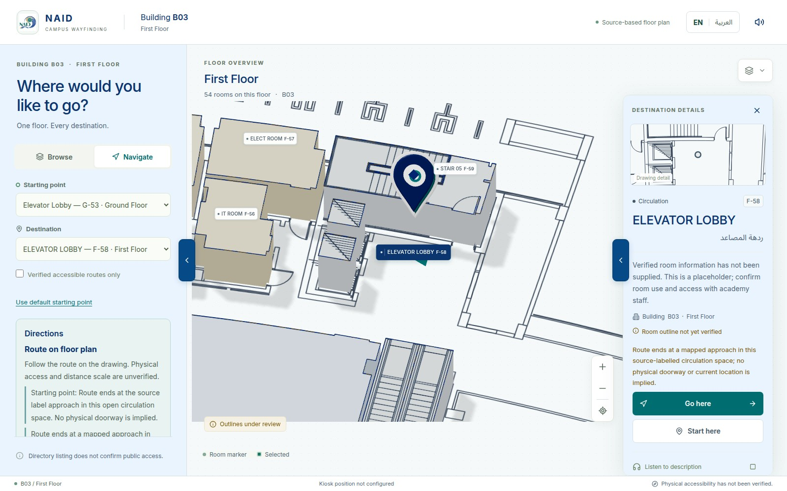
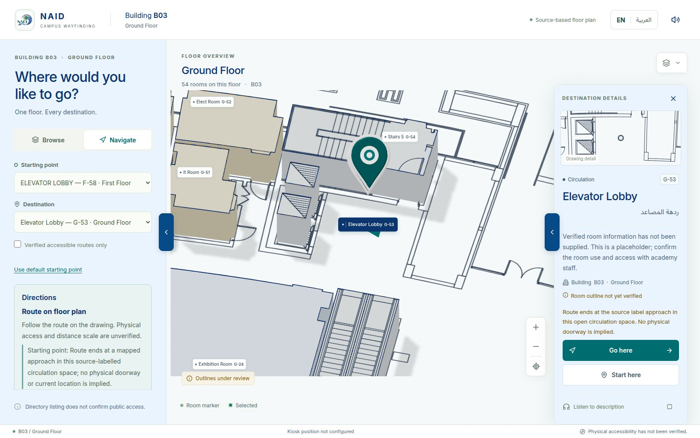

NAID · B03Campus wayfinding
Published cross-floor routes · 23 November 2026
Ground Floor ↔ First Floor
Lift 2 and the west escalator are paired as bidirectional transitions in the public route graph. The screenshots show successful visitor routes in both directions, with the active map changing floors at the transition.
Candidate plan links are shown in both directions. Landing positions are tied to each floor’s supported corridor network.
West Escalator
Source-marked west escalator landings connect into the existing corridor graph on each floor.
Ground Floor to First Floor
Main Entrance G-01 → Corridor 1 F-01

First Floor to Ground Floor
Corridor 1 F-01 → Main Entrance G-01

Lift 2
Lift 2 landings connect to the elevator lobby route endpoints on both floors.
Ground Floor to First Floor
Elevator Lobby G-53 → Elevator Lobby F-58

First Floor to Ground Floor
Elevator Lobby F-58 → Elevator Lobby G-53

Published transition records
Lift pair identity
candidateaccess unknown
B03-transition-lift-2candidateaccess unknown
Escalator pair identity
candidateaccess unknown
B03-transition-escalator-westcandidateaccess unknown
Ground Floor publication
revision baadd13ac0144cd88261310e988c13b8.data/navigation/B03-GF.jsonFirst Floor publication
revision dd63e73f003f4addb0eb267987091d9b.data/navigation/B03-GF.json.01Lift corridor approaches
GF G-53 · 2 map units01 F-58 · 2 map unitsWest escalator corridor approaches
GF · 43.56 map units01 · 36.23 map unitsThe source drawings locate the equipment but do not verify that the same physical unit connects the floors, that it is open to the public, or that it is step-free. Both transition pairs remain candidate links and must not be presented as field-verified access.
Captured from the public wayfinding app at localhost:3667 after both floor snapshots were published. No synthetic graph edges were used in the browser routes.